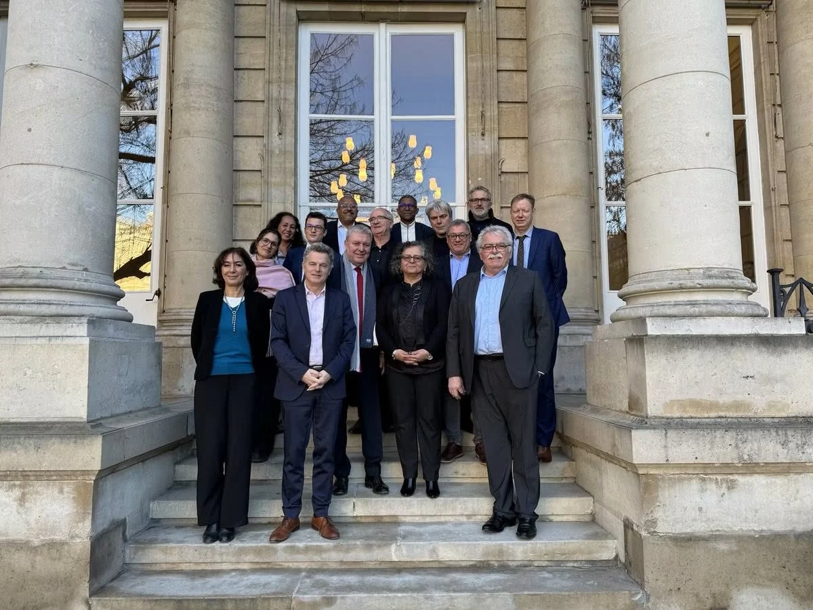

Publication relayée par le PCF 79
Rencontre à l’Assemblée avec Aida Touma-Suleiman et Reem Hazzan
Date de mise à jour indiquée par Facebook · 17 janvier 2024
Texte de la publication · Les députés communistes
Merci à Aida Touma-Suleiman, députée communiste israélienne et Reem Hazzan, représentante du Parti communiste israélien pour l’échange que nous avons eu à l’Assemblée ce matin. Leur volonté d’aller vers la Paix et leur courage nous inspirent.
Expulsée de la Knesset pendant 2 mois pour avoir parlé de la paix avec les Palestiniens, Aida Touma-Suleiman porte l’analyse et le témoignage des communistes israéliens qui se battent coûte que coûte pour la paix, la libération des otages du Hamas et la fin du nettoyage ethnique en cours à Gaza. Nous continuerons à nous tenir à côté d’eux pour lutter pour la paix et la recherche d’une solution politique et pacifique à ce conflit.

Sources
Les députés communistes · publication relayée par le PCF 79 · bibliothèque Facebook · AR-0002-FB-01499
À lire aussi · À l’Assemblée, Elsa Faucillon appelle à un cessez-le-feu à Gaza